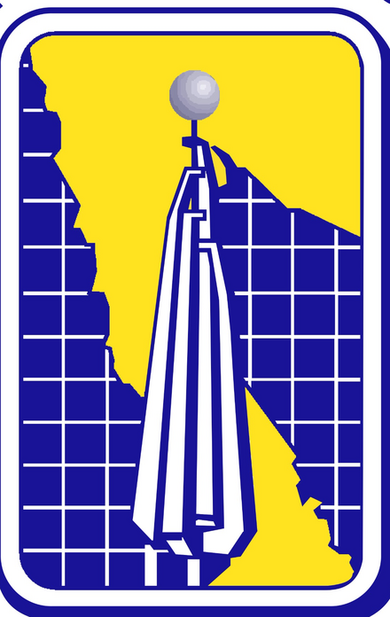

Carga
160 unidades10 portadoresPLASMA INITIAL TRAINER
Etapa ATP 3Limpieza y activación superficial antes de Die Attach
Instituto
Tecnológico
de Nogales
de Nogales

Instituto Tecnológicode Mexicali
Ayudas, alarmas y criterios visibles durante la práctica.
LOTE ATP-P3-001 · Leadframe · 160
UNIDADES
LOAD RF
Receta
96/10019.7 W·s/cm²Seguridad
0/7Verificación pendientePASO 1
Definir el lote y la carga
PASO 2
Seleccionar el soporte
PASO 3
Construir la receta
MEZCLA DE PROCESO100%
Las tres fracciones deben sumar 100%
O₂
Ar N₂
96Compatibilidad
de receta
de receta
Dosis normalizada 19.7
W·s/cm²Banda objetivo
Todos los parámetros están dentro de la ventana didáctica.
Ventana: 45–95 W · 0.2–0.55 mbar · 35–85 sccm · 25–75 sPASO 4
Interlocks y escenario
7 verificaciones pendientesMarca cada punto después de
comprobarlo.
La mezcla O₂ + Ar + N₂ también debe sumar 100%.
PREVISUALIZACIÓN
Cámara y carga
CÁMARA P-03 VACÍO RF
O₂ 20%Ar 80%N₂ 0%
RF
PRESIÓN1000.000 mbar
FLUJO0 sccm
POTENCIA RF0 W
TIEMPO0 s
Objetivo de la etapaRemover contaminación orgánica y elevar la energía superficial para favorecer el pegado del dado.